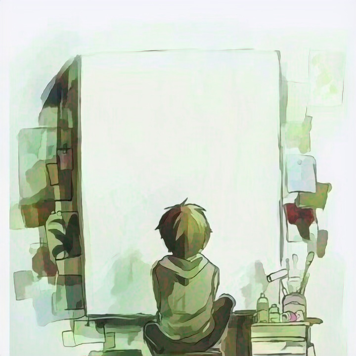

Xiaopeng Yan
I am currently a retrieval algorithm researcher at ByteDance, Douyin Push Team. Before March 2024 I was a video retrieval algorithm researcher at the AI Platform of TEG, Tencent, and before April 2021 I worked at the EIG research center as a computer vision researcher at SenseTime. I received my M.S. in computer science from the Human Cyber Physical Intelligence Integration Lab of Sun Yat-sen University in 2019, advised by Prof. Liang Lin and Prof. Hui Cheng. I received my B.E. in automation from the School of Electronics and Information Technology.
我目前是字节跳动抖音推送团队的检索算法研究员。 2024 年 3 月以前，我在腾讯 TEG AI 平台担任视频检索算法研究员； 2021 年 4 月以前，在商汤 EIG 研究中心担任计算机视觉研究员。 我于 2019 年在中山大学 人机物智能融合实验室 (HCP Lab)获得计算机科学硕士学位， 师从林倞教授与成慧教授； 本科毕业于电子与信息工程学院自动化专业。
News动态
- 2024 / 03 I joined ByteDance as a retrieval algorithm researcher on the Douyin Push Team. 加入字节跳动抖音推送团队，任检索算法研究员。
- 2021 / 04 I joined the AI Platform of TEG at Tencent working on video retrieval. 加入腾讯 TEG AI 平台，方向为视频检索。
- 2019 / 06 I obtained my M.S. in computer science at Sun Yat-sen University (HCP Lab). 获得中山大学 HCP Lab 计算机科学硕士学位。
Research Interests研究兴趣
Computer Vision计算机视觉
- Object Detection目标检测
- Video / Face Recognition视频 / 人脸识别
- Generative Adversarial Networks生成对抗网络
Machine Learning机器学习
- Deep Semi-supervised Learning深度半监督学习
- Sample Mining样本挖掘
- Few-shot Learning少样本学习
Information Retrieval信息检索
- Video Retrieval视频检索
- Recommendation & Push推荐与推送
- Representation Learning表征学习
Applications应用方向
- Short-video Understanding短视频理解
- Multi-modal Matching多模态匹配
- Large-scale Systems大规模系统
Selected Honors & Awards荣誉与奖项
- 2018Excellent Graduate Award优秀毕业生
- 2018Graduate First Class Scholarship研究生一等奖学金
- 2018Two National Invention Patents两项国家发明专利
- 2017Excellent Graduation Thesis优秀毕业论文
- 2014 – 2016Excellent Scholarship优秀奖学金
- 2015First Place, Entrepreneurial Competition创业大赛一等奖